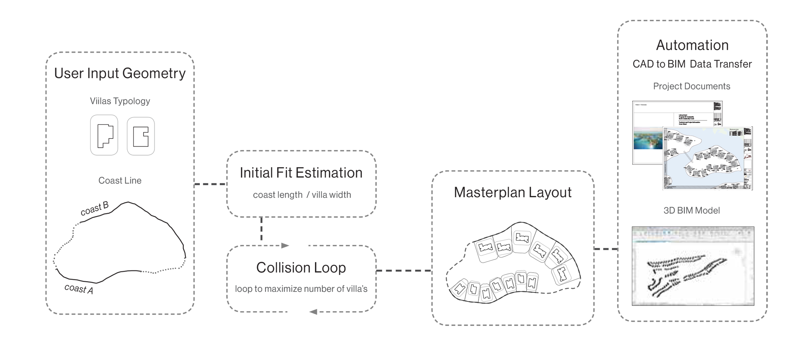

ALGORITHMS · SPATIAL OPTIMISATION · COMPUTATIONAL GEOMETRY
Collision-based optimisation for packing building assets along a curve
An algorithm for arranging building assets along a defined curve while maximising the number of elements that can be placed. Candidate positions are iteratively tested through a loop of physical collision simulations, using the resulting spatial interactions to refine the packing configuration.
